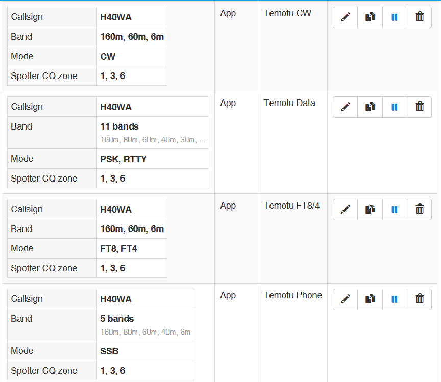

Hi Paul, et al (broadened to other spotting lists),
You mentioned a very worthy resource but just in case for those
not familiar with HamAlert, it could use some explanation. It
is a very useful tool, right up there with a quiet location,
good antennas and an amp or two.
I use HamAlert also, but (as I live alone most of the time and
partly deaf) have the volume turned high (and the phone/tablet
nightly quiet mode turned off during DXpeditions). Being a
light sleeper with a long firehouse history helps to hear alarms
while asleep. That was also training for split shift sleeping
(which does accumulate fatigue over long stretches like
Clipperton -> Guyana -> Temotu; at some point sleep is
needed).
You DO have to mute the tablet/phone at times (always goes off
in church); but you don't have to disable it.
Overview:
HamAlert looks at ALL of the spotting networks (except
DXSummit.fi, it has too high a noise floor), collates the spots
and presents them in ONE source (gross oversimplification).
[YOU set the filters.] It then punts the [filtered] data to
you. The alert tones, tell you which source is being reported
(DXspotting/PSKreporter or RBN) in CW if you wish.
What is DOES lack, is a computer app or browser alert; it
expects a phone or tablet app (free). So you MUST have/use a
phone/tablet (who doesn't?). That is the largest flaw, in my
opinion. The second is the sheer complexity of setup for seeing
new entities in all modes (all unlogged band mode slots); a
topic for another time, but similar to the following.
How to use it:
I've found that FOUR alerts are necessary for any one
DXpedition. One trigger EACH for CW, Phone, FT8 and (this is
key) Other Data modes (RTTY, PSK, Q65 for 6M). Do not lump it
all together into one confusing blob (spleet! up up up up!).
KISS mode rocks!
Do NOT rely on Clublog for DXpedition filtering; that is ONLY
updated daily (or on demand but not nearly often enough). For
more generic spotting needs, Clublog linking is fine (once you
climb high enough in the worked entity listing).
I set the triggers to the specific DXpedition call/s, bands and
the modes (per above). This allows the most flexibility, almost
always without alerts for slots you already have (almost,
because HamAlert guesses at some modes based on portion of the
spectrum). You still have to (should) maintain a mental and/or
paper check sheet for the slots you want/need to verify. With
age, paper is simpler.
I filter the spots from a generic spotter location,
based on where the DX is (if Atlantic, the east coast hears
first, add that). This isn't perfect since bands vary in
coverage, so you have to decide what amount of excess or early
warning you need/tolerate (Syria spotted in the NE on 12M, speed
to get to the shack based on the signal strength report in the
spot). This is where a generic understanding of band
propagation, matters.
Then: after each contact, I uncheck the band
for the mode trigger just logged (be SURE to click on
save). That way, minimal reruns, fewer alerts; better harmony
within the house, more sleep time etc. (I slept through Temotu
40 CW last night, because I already had it.)
Focused Planning:
In addition to HamAlert; on the computer/tablet, I also have
browser tabs open: to review DXWatch spotting (DXpedition call/s
only, one entity per tab); Livestream (if available, see where
the logging is happening) which showed me WHERE and what
mode/band the DX is heard. Finally a tab for my Clublog
contacts with that DX (saves time checking need/s or verifying
DX logging if Livestream isn't working or an option).
DXing (this time of year) is one of my favorite things to do
(no yard work, home repair, painting to 'get in the way'). Time
is available to focus, drill down on band mode slots I still
need.
One KEY POINT, when the alert goes off, YOU have to read it,
see if it makes sense for your station (6M from P5 @ +20 dB?)
then react, QUICKLY get into the station (or remote in) before
the hordes arrive to attack. Again, KEY POINT, be EARLY in the
attack for less competition or spend hours calling for the
(potential) log entry. It's not perfect, sometimes ya lose.
HamAlert is a powerful tool when applied this way. And with late winter snow here now (2" so far, not enough to bother anything but it's purty), makes for a nice lazy day near the wood stove but with active moments. And as the slots get clicked off, more sleep is possible, to keep your housemates happier with your disposition.
I'm not a pro, but on some teams, I spend time to focus on
them. This is what I found and how I roll. DXing is my primary
(winter) hobby. Summer is usually new antennas or maintenance
(and yard work etc) with some travel (YAY remoting!).
Who cannot use one more tool in the box? HamAlert can be used
as a brad driver or sledge hammer; a very useful tool.,
adjustable to your needs.
73,
Rick nk7i


_______________________________________________ Chat mailing list Chat@ncdxc.org http://mail.ncdxc.org/mailman/listinfo/chat_ncdxc.org